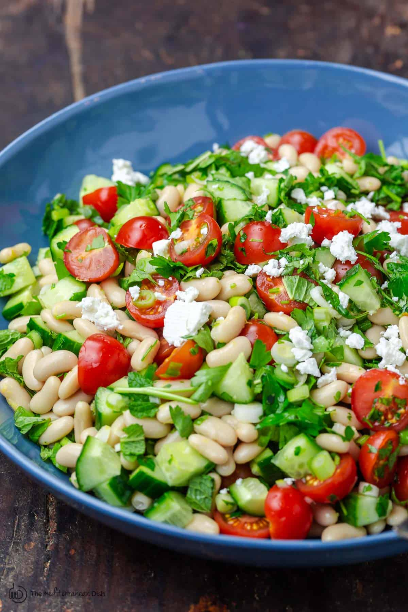

Tuscan White Bean Salad

A bright Mediterranean white bean salad with crisp veggies, fresh herbs, lemon, and good olive oil — no fancy dressing needed.
· · · Method · · ·
2 canswhite beans (cannellini), drained and rinsed well1English cucumber, diced10 oz / 280ggrape or cherry tomatoes, halved4green onions, chopped1 cupchopped fresh parsley15 to 20mint leaves, chopped1lemon, zested and juiced- salt and pepper
1 tspza’atar½ tspsumac½ tspAleppo pepper- extra virgin olive oil
- feta cheese, optional
Add white beans, cucumbers, tomatoes, green onions, parsley and mint to a large mixing bowl.
Add lemon zest. Season with salt and pepper, then add za’atar, sumac and Aleppo pepper.
Finish with lemon juice and a generous drizzle of extra virgin olive oil (2 to 3 tbsp). Give the salad a good toss to combine. Taste and adjust seasoning. Add feta cheese, if you like. For best flavor, let the salad sit in the dressing for 30 minutes or so before serving.